90prime Dark Images in May/June 2004
C. W. Engelbracht; last updated 2004-7-8
Summary
- The dark current varies by an order of magnitude from chip to chip
- The dark current on chips 3 and 4 varies with time
- The dark level varied by up to 30% during the nights of the June run,
on chip 4 only
- The dark current scales well with integration time
Chip to Chip Variations
As shown in Table 1, the 90prime dark current is lowest on chips 1 and 2
and highest on chip 3. Chip 3 displays periodic structure in the column
direction, while chip 4 displays a large region of elevated dark current in
the center of the image.
| Table 1 - Dark Variation from
Chip to Chip |
| May 9 Combined 600s dark |
Chip 1: display range -10 to 50
median=2.7 |
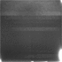
Chip 2: display range -10 to 50
median=7.9 |
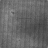
Chip 3: display range 0 to 2000
median=783 |
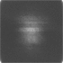
Chip 4: display range -100 to 300
median=10.3 |
Variation With Time
As shown in Table 2, the structure of the dark current is similar from day
to day but the level varies a bit, especially on chips 3 and 4.
| Table 2 - Dark Measurements
from Day to Day |
| May 10 Combined 600s dark |

Chip 1: display range -10 to 50
median=3.4 |
Chip 2: display range -10 to 50
median=10.3 |
Chip 3: display range 0 to 2000
median=715 |
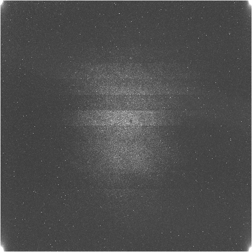
Chip 4: display range -100 to 300
median=12.1 |
| May 11 Combined 600s dark |
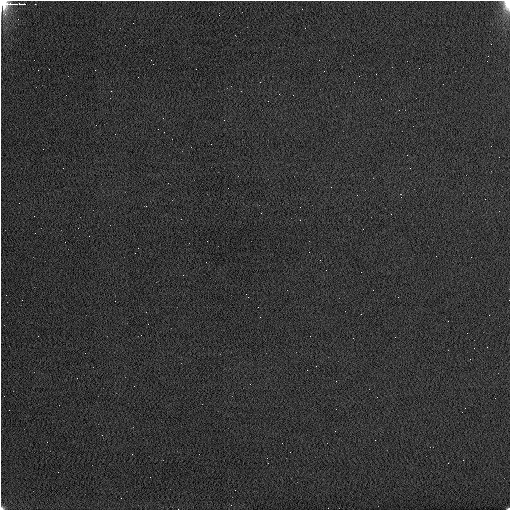
Chip 1: display range -10 to 50
median=2.5 |
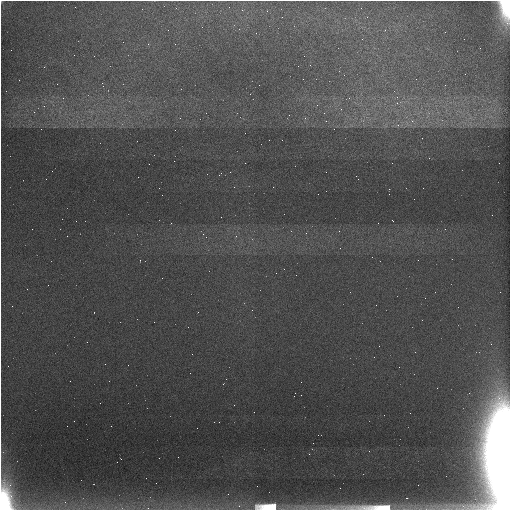
Chip 2: display range -10 to 50
median=7.9 |
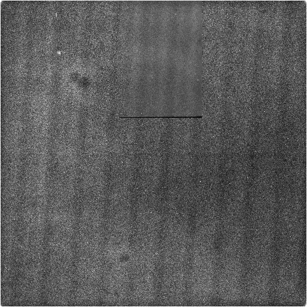
Chip 3: display range 0 to 2000
median=679 |
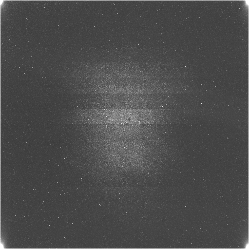
Chip 4: display range -100 to 300
median=9.2 |
| June 20 Combined 600s dark |
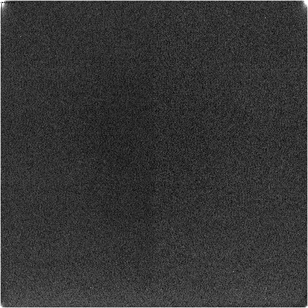
Chip 1: display range -10 to 50
median=2.1 |
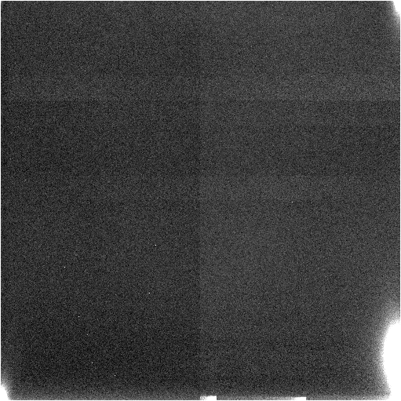
Chip 2: display range -10 to 50
median=3.4 |
Chip 3: display range 0 to 2000
median=875 |
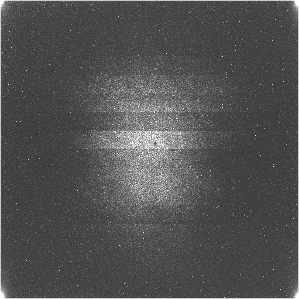
Chip 4: display range -100 to 300
median=9.5 |
| June 21 Combined 600s dark |
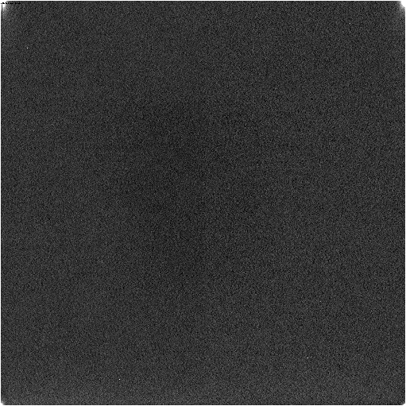
Chip 1: display range -10 to 50
median=1.7 |
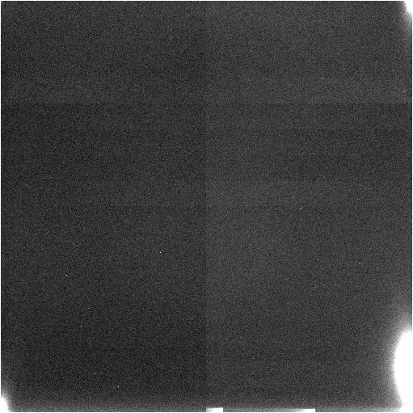
Chip 2: display range -10 to 50
median=3.1 |
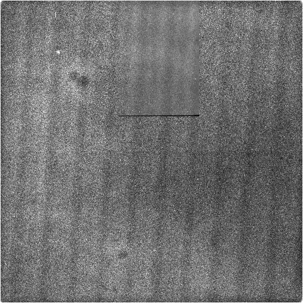
Chip 3: display range 0 to 2000
median=852 |
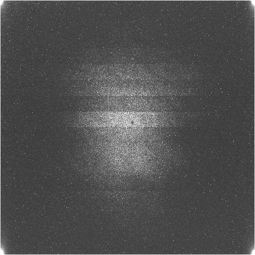
Chip 4: display range -100 to 300
median=7.9 |
The dark current on chips 3 and 4 varies on timescales as short as
minutes. Table 3 shows plots of average dark current as a function of time
for each chip during a sequence of dark observations. The points are
separated by the duration of each dark measurement, i.e., 600 seconds. The
dark level is observed to vary in a significant way on chips 3 and 4. The
level of variability appears higher during the May run than the June run.
| Table 3 - Dark Variability on
Short Timescale |
| May 9 Individual 600s dark measurements |
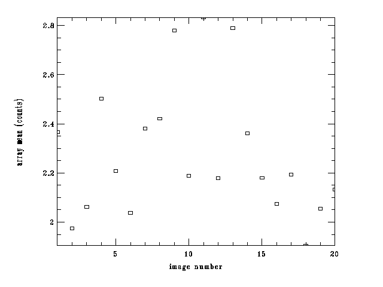
Chip 1 |
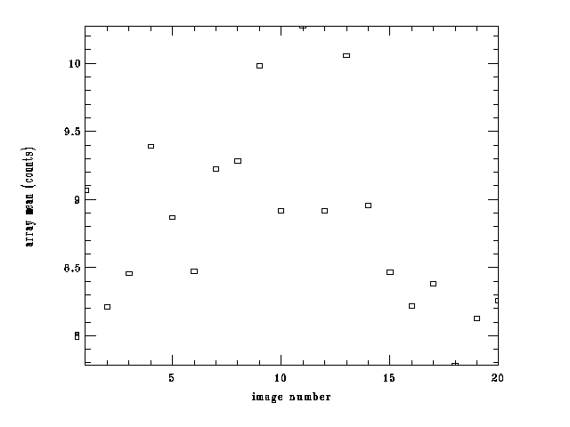
Chip 2 |
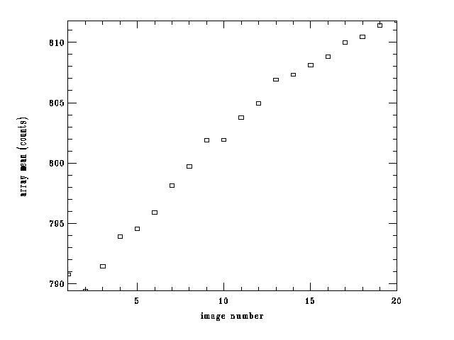
Chip 3 |
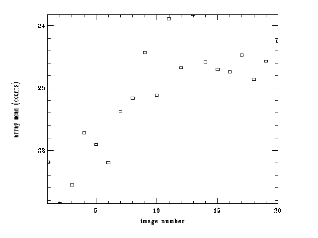
Chip 4 |
| June 21 Individual 600s dark measurements |
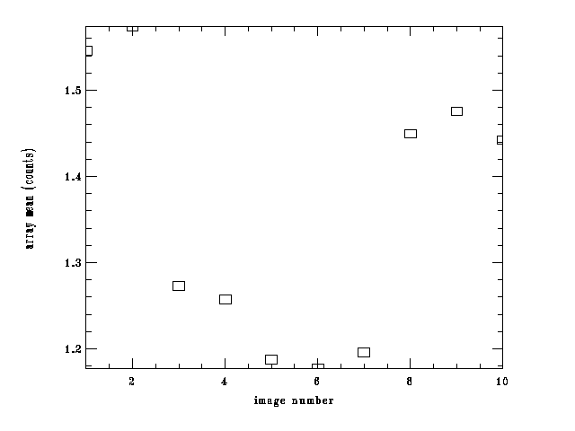
Chip 1 |
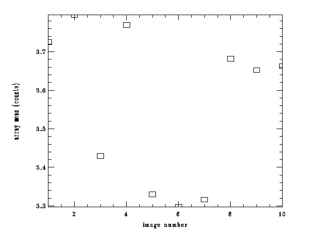
Chip 2 |
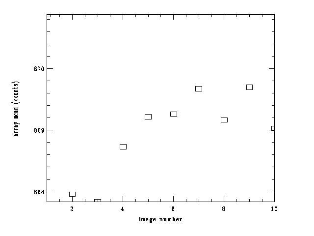
Chip 3 |
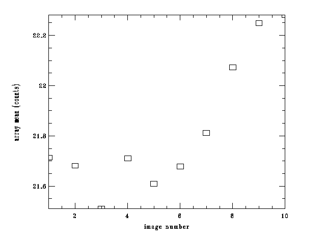
Chip 4 |
The dark level was observed to vary by up to 30% during the nights of June
20 and 21, 2004, but only on chip 4. This effect was not observing during the
May 2004 run. The effect was corrected by scaling the dark current before
subtracting it. Table 4 shows some nighttime data in the U band (600s
exposures) on chips 3 and 4, the only ones with appreciable dark current. The
standard (i.e., unscaled) dark subtraction works well on chip 3, but leaves
obvious residuals on chip 4. Subtracting a scaled dark (reduced by 5% to 30%
in the data shown below) corrects the dark subtraction for chip 4, but leaves
obvious residuals in chip 3. Thus, to make nighttime flats for the June run, the
dark was scaled for chip 4 only.
| Table 4 - Nighttime Dark Variability in June 2004 |
| Chip |
Standard Dark |
Scaled Dark |
| 3 |
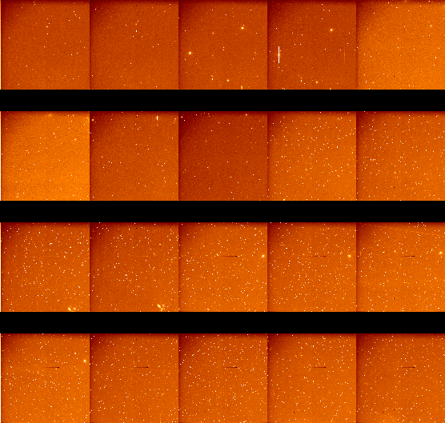 |
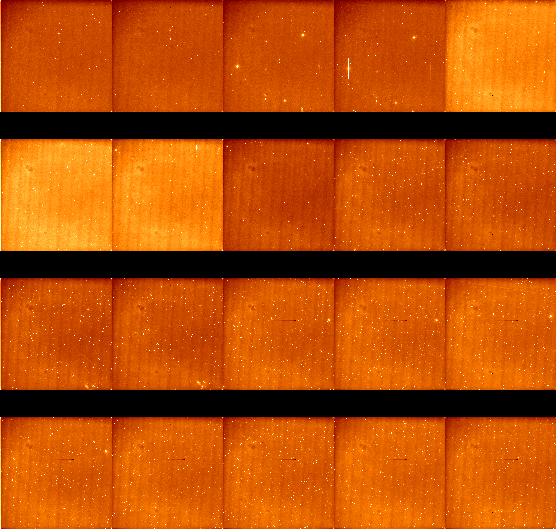 |
| 4 |
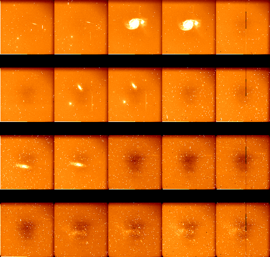 |
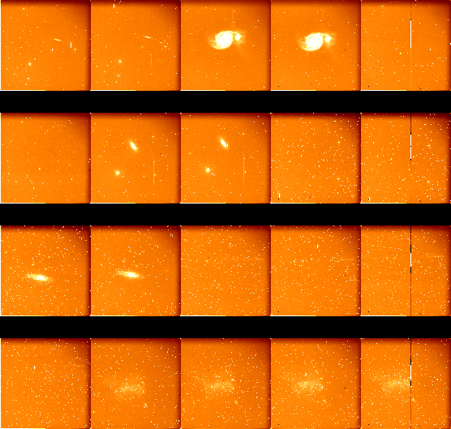 |
Variation With Integration Time
The dark current appears to scale properly with time, when
measurements are made on the same day. The images in Table 5 are the
differences of a scaled 600-second dark and a 60-second dark. The median
values are all within a few tenths of an ADU of zero and no structure is
observed in the images, so the dark appears to scale appropriately with time.
| Table 5 - Difference of 60s
and Scaled 600s Darks |
| (May 9 600s dark) / 10 - (May 9 60s dark) |
| display range is -20 to 20 |
Chip 1 |
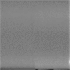
Chip 2 |
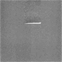
Chip 3 |
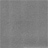
Chip 4 |
{kind=link}
{kind=link}
{kind=link}
{kind=link}
{kind=link}
{kind=link}
{kind=link}
{kind=link}
{kind=link}
{kind=link}
{kind=link}
{kind=link}
{kind=link}
{kind=link}
{kind=link}
{kind=link}
{kind=link}
{kind=link}
{kind=link}
{kind=link}
{kind=link}
{kind=link}
{kind=link}
{kind=link}
{kind=link}
{kind=link}
{kind=link}
{kind=link}
{kind=link}
{kind=link}
{kind=link}
{kind=link}
{kind=link}
{kind=link}
{kind=link}